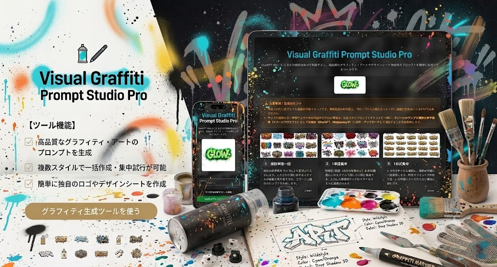
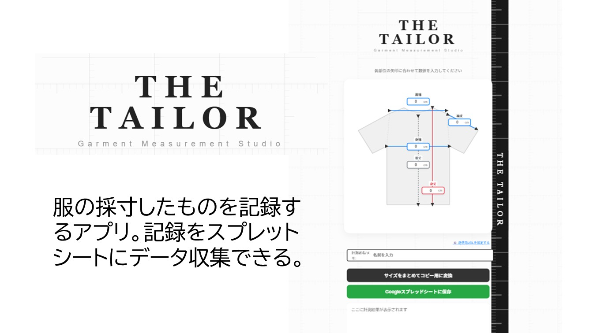
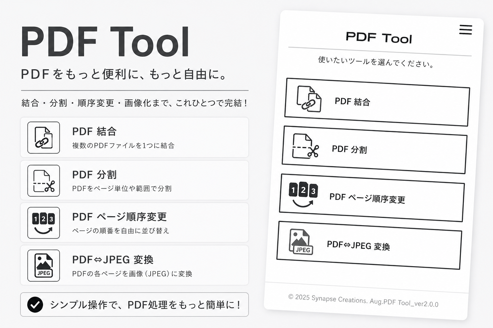
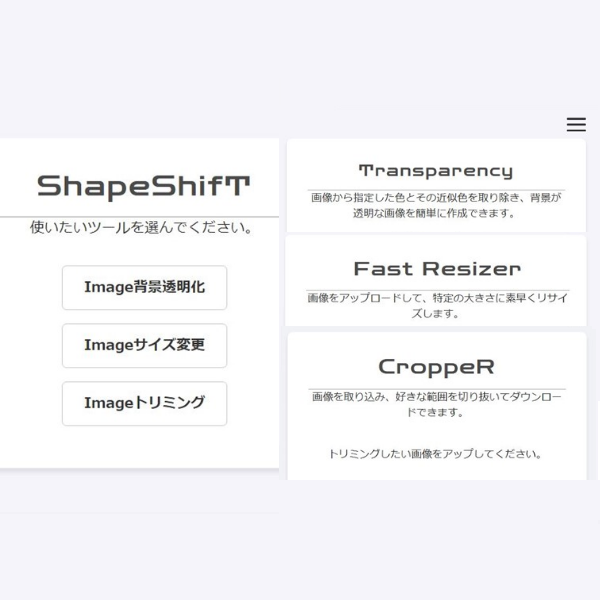
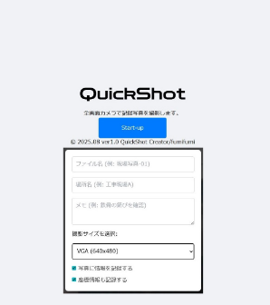
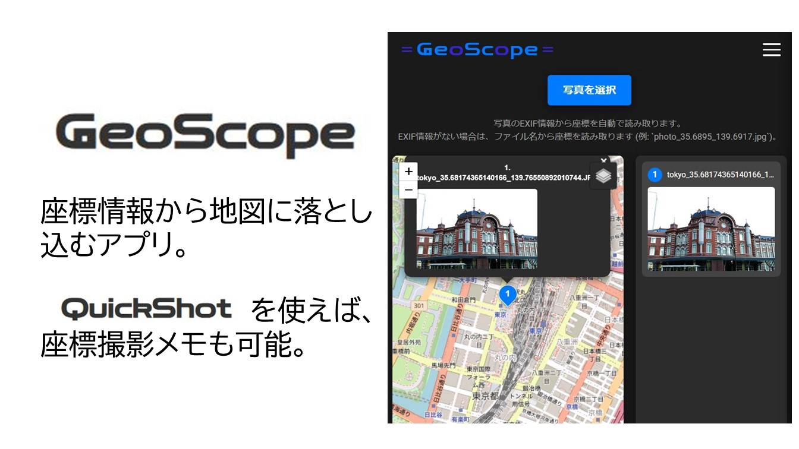
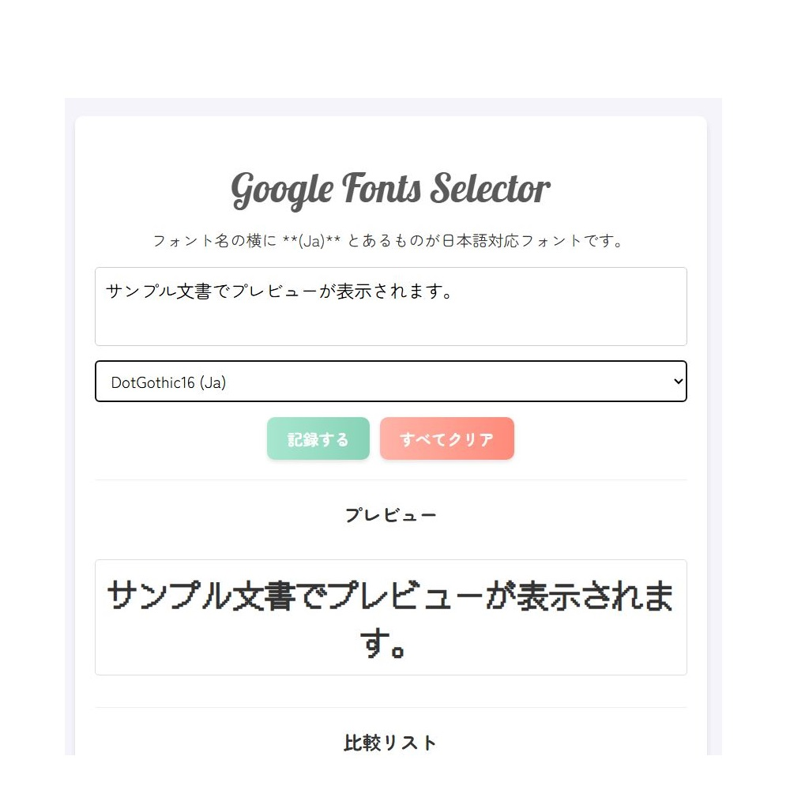
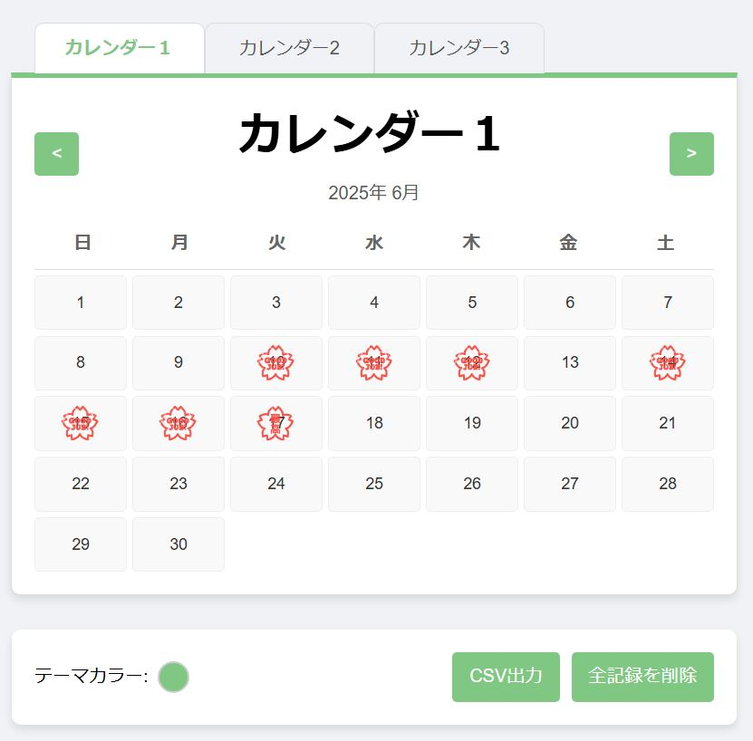

画像生成AI用のプロンプト作成ツール。

洋服採寸を入力し、データ蓄積できます。
ナンプレを解析し解答を出力するアプリ。パズルゲームもできます。
オリジナルQRコード作成アプリ。ロゴや配色を自由に作成できます。

簡易的なPDF編集ツール。PDFを結合、分割、ページ入れ替え、JPG変換ができます。

簡易的な画像編集ツール。背景を透明化、リサイズ、トリミング、PDF変換ができます。

現場の記録写真を撮る際に、その場で写真名、場所、メモ、座標を撮影写真に直接書き込むアプリ。

QuickShotで撮影した座標情報がある写真を地図に落とし込むアプリ。

GoogleFontを実際に確認しながら比較できるものです。サイト作成時に活躍。

単純にその日に達成を記録する簡単アプリです。タイトル・色を自由に変更可能。日付もCSV出力可。